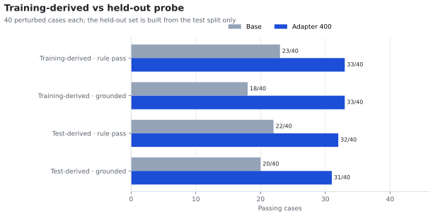
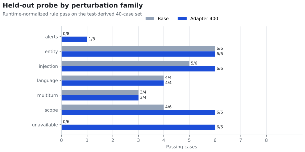
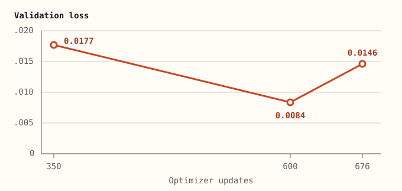

LangGraph + SQLite
LangGraph moves an analysis from one step to the next. SQLite keeps the published report, the review decision and enough state to resume a draft after a restart.
Vulnerability Evidence and Reasoning Agent
VERA drafts security reports with a local model and shows analysts the sources behind its findings.
LangGraph moves an analysis from one step to the next. SQLite keeps the published report, the review decision and enough state to resume a draft after a restart.
The model runs in a separate process, and VERA can extract findings even without it. Kuzu is optional and supplies evidence without controlling the workflow.
The model helps interpret the question. VERA still looks for evidence when the request names an exact identifier, includes events or asks about a concept in the local records.
VERA selects curated context, retrieval, tools and stream processing independently. The route lists the selected resources, and each lookup reports its own outcome.
VERA ranks dated snapshots with BM25 and embeddings, then weighs where each record came from, how recent it is and what it adds.
Kuzu links entities through assertions backed by source records. Comparing retained evidence IDs with cited IDs shows whether a graph record made it into the answer.
VERA can check CVE.org, NVD, CISA KEV, FIRST EPSS and OSV. It uses search snippets to locate allowlisted pages and draws evidence from the pages themselves. ReAct uses a fixed set of tools.
Earlier turns help VERA resolve references. Facts require authoritative evidence, and a claim about current status requires a fresh lookup.
The rules look for distinct-port scans, repeated HTTP authentication failures, TCP SYN bursts and selected web indicators. Each finding records the rule, its observation window and the count.
tshark extracts fields from PCAP, and VERA labels observations from simulations. Identifying an actor, confirming compromise or measuring downtime requires additional evidence.
Under vera-evidence-v2, one relevant source cannot make up for an unrelated citation. If there are neither matching records nor event evidence for an exact identifier, VERA reports the gap. Citation errors remain visible after retries, and non-extractive prose goes to review.
A high-severity alert, a failed citation, fallback output or a non-extractive summary can send the draft to review. While it is pending, it stays out of published history, memory and the knowledge graph.
Approval publishes the version the analyst saw. VERA blocks approval if the version is stale or the validation contract has changed.
VERA gathers evidence again and pauses for a decision on the new draft. An analyst can request up to two revisions.
Rejection closes the draft without publishing. To retry any interrupted decision, reuse its UUID and payload.
Review stays on loopback. Retrying the same decision does not apply it twice, and approval does not independently verify the finding.
Use /chat to check findings and review drafts. /knowledge-graph shows domain records, while /v1/graph shows how the workflow is wired.
Send questions and structured events to POST /v1/analyze. HTTP 200 includes the published report. HTTP 202 returns a draft that is waiting for review.
vera analyze reads normalized event files and PCAP. Use vera review for pending drafts and vera kg-build to build the optional graph.
/health reports configuration. When an external model is configured, /ready probes it with a small synthetic request. Answer quality needs a separate evaluation. A local rollout uses one worker per database and a verified backup restore.

The adapter raised grounded passes from 20/40 to 31/40 on cases derived from held-out rows. Some expected answers still matched training targets.

The adapter passed all six unavailable-evidence cases. Alert counting remained the weakest area, with one pass in eight cases. Both models passed three of four follow-ups.

Training used frozen source fragments and controlled event replays. After one epoch, we merged the adapter into Qwen 3.5 4B and exported a 3.2 GB Q6_K artifact.
Dataset card · Training results. The curve measures fit on the validation set. Real incident analysis needs a separate evaluation.
| Metric | Base | V4 adapter |
|---|---|---|
| Valid schema | 45/54 | 54/54 |
| Correct scope | 44/54 | 54/54 |
| Marked evidence unavailable when expected | 6/12 | 10/12 |
All 54 adapter answers matched the schema, yet two cited unrelated records. That is why VERA checks the relevance of each citation as well as whether the quotation is exact.
Source: November 2026 paired test. The pack shared 12 training targets and contained five duplicate rows, so it was not an independent evaluation.
These are generation averages on the 54 historical V4 test cases. The next slide measures full requests through the local runtime.
We sent the same eight requests to both Q6_K artifacts through VERA, using llama-server on a 16 GB Apple silicon machine with live lookups disabled.
| Outcome | Base | Merged |
|---|---|---|
| Cases with validation errors | 4/8 | 2/8 |
| Pending review | 6/8 | 6/8 |
| Fallbacks | 0/8 | 0/8 |
We timed eight full requests before the routing and abstention fixes. The probe did not measure accuracy or throughput.
Both models cited a relevant PowerShell record, recognized reworded social messages and declined an unrelated question. They also reported that the requested identifier was absent from the available evidence.
The abstention draft still went to review, and citation errors remain on some event replays and answers that draw on multiple sources.
A real model produced a draft that survived a restart. VERA rejected an outdated decision and did not apply a retried decision twice. We also restored an isolated SQLite backup and checked the package contents.
The 54 cases prepared for an independent study have not been run. A human reviewer still needs to check the questions and expected findings before we generate answers with a fixed model build.
That study will ask whether the cited records support the findings, whether the model interprets them correctly and whether it flags missing evidence.